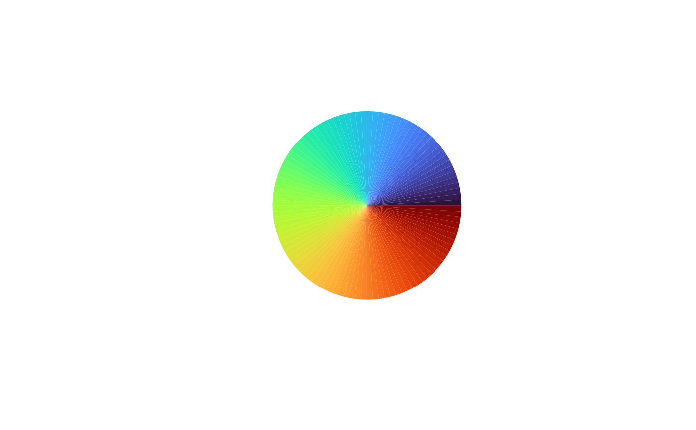

Get Turbo colormap
Examples
colorify(colors=colorify:::turbo(100), plot = TRUE)

#> [1] "#30123BFF" "#341A4EFF" "#362160FF" "#392971FF" "#3C3081FF" "#3E3891FF"
#> [7] "#403F9FFF" "#4146ACFF" "#434DB8FF" "#4454C4FF" "#455BCEFF" "#4662D7FF"
#> [13] "#4669E0FF" "#476FE7FF" "#4776EEFF" "#467CF4FF" "#4683F8FF" "#4589FCFF"
#> [19] "#4390FEFF" "#4196FFFF" "#3E9DFEFF" "#3AA3FCFF" "#35AAF9FF" "#31B0F5FF"
#> [25] "#2CB6F0FF" "#28BCEAFF" "#23C2E4FF" "#20C8DEFF" "#1CCED7FF" "#1AD3D0FF"
#> [31] "#18D8C9FF" "#18DCC3FF" "#18E1BCFF" "#1AE4B6FF" "#1EE8B0FF" "#23EBA9FF"
#> [37] "#29EEA2FF" "#30F19AFF" "#38F492FF" "#41F689FF" "#4AF880FF" "#54FA77FF"
#> [43] "#5EFC6FFF" "#68FD66FF" "#72FE5EFF" "#7CFF56FF" "#86FF4FFF" "#8FFF49FF"
#> [49] "#98FE43FF" "#9FFD3EFF" "#A6FC3BFF" "#ADFA38FF" "#B4F836FF" "#BAF534FF"
#> [55] "#C1F234FF" "#C8EF34FF" "#CEEB34FF" "#D4E735FF" "#DAE336FF" "#DFDF37FF"
#> [61] "#E4DA38FF" "#E9D539FF" "#EDD03AFF" "#F1CB3AFF" "#F5C53AFF" "#F8C03AFF"
#> [67] "#FABA39FF" "#FCB437FF" "#FDAE35FF" "#FEA732FF" "#FEA02FFF" "#FE992CFF"
#> [73] "#FE9129FF" "#FD8A26FF" "#FC8223FF" "#FA7A1FFF" "#F8721CFF" "#F66B19FF"
#> [79] "#F36315FF" "#F15C12FF" "#ED5510FF" "#EA4F0DFF" "#E6490BFF" "#E2430AFF"
#> [85] "#DE3E08FF" "#DA3907FF" "#D53406FF" "#D02F05FF" "#CA2A04FF" "#C52603FF"
#> [91] "#BF2202FF" "#B81E02FF" "#B21A01FF" "#AB1601FF" "#A31301FF" "#9C0F01FF"
#> [97] "#940C01FF" "#8C0902FF" "#830702FF" "#7A0403FF"